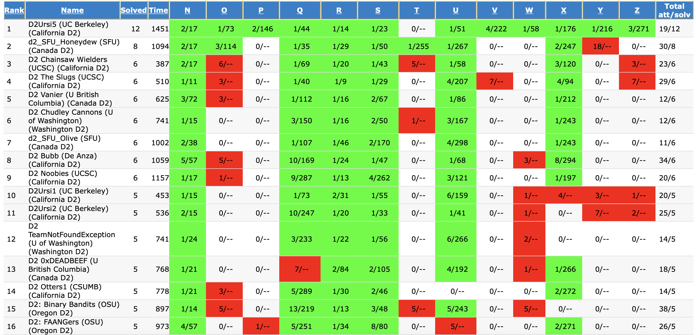
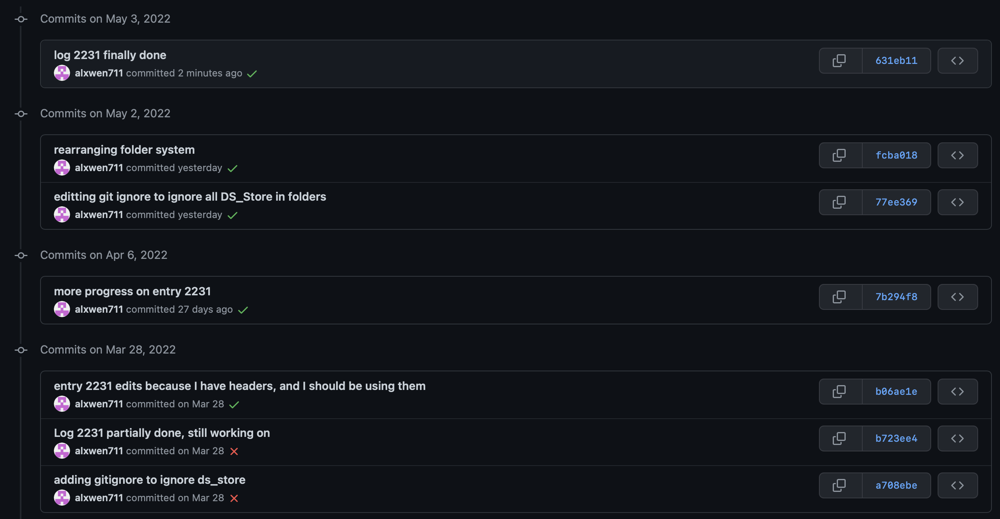

March 1st-15th
Note: Most of this entry was written at the end of March, mostly because SFU Midterms and projects happened. I’m still in the heavy part of my course load this term, so the next post may also be delayed, but hopefully by April posts are actually being posted on time.
The first two weeks of March was the first period in which I do not have any CodeForces contests to recap, due to the fact that nearly all of them run during times when I am in class at SFU, and the one that didn’t start at 1:55AM. Regardless, there is still much to recap, mainly the ICPC Pacific Northwest Regional Contest that took place on March 5th.
The Pacific Northwest Regional is a university level programming competition that serves as a qualifier for the North American Championship, the penultimate stage before the ICPC World Finals. The regional contest itself is divided into Division 1, which is for more experienced competitors and has a problem set that is basically a lite version of what could be expected at the World Finals, and Division 2, for newer competitors who have not completed all the algorithm courses in their program yet. Since this was my first time competing in this kind of competition, I alongside Brandon Zhu and Rishi Saran Vijayarajan competed in Division 2 as SFU_Honeydew (Honeydew is a very light green colour that would represent all the accepted submissions we would get in the contest. I may have made that last sentence up.).
The competition itself functioned similarly to most online competitions, but with a few significant changes, most trivially is that this is a team competition, so communication and team strategy plays a key role here. 13 problems were to be solved within 5 hours, making this by far the longest competition I have competed in. This made the competition much more of a marathon rather than a sprint where the focus was not to try and get the easy questions quickly with as little penalty as possible, but to solve as many questions as possible, even at the cost of having a large penalty due to incorrect submissions.
Anyways, that’s enough explaining the format of the contest. Here is a link to the PDF containing the Division 2 questions. Note that the questions are not arranged in order of increasing difficulty. As for how our team did?

We crushed the contest, placing clear second overall in the division by two questions. If it wasn’t for the fact that each school could only enter a maximum of 6 teams in Division 1, we probably would have also won the division outright, but that aside, our team was the only one to solve problem T, and that will be one of the three questions I’ll be going over in this recap today, alongside problems S and Y.
Problem S, Rise and Fall
This was one of the easier questions in the contest, and is similar to the kinds of problems one would find in CodeForces on a Div 2 contest as problem A or B. The first thing we can notice is that the key limitation on the input is that we’ll be dealing with up to 10^5 digits in 1 second. This brings up a principle of coding contests that I will refer to as the “Rule of a Million”, which is for a sample size of \(n\), if your solution \(f(x)\) is to run within a reasonable timeframe (usually 1 second), then \(f(n)\) should be no greater than a million. With numerical examples, an \(O(n^2)\) solution will usually be good for sample sizes up to 1000 since \(1000^2 = 1000000\), \(O(n^{1.5})\) solutions will likely be good for sample size up to 10000 since \(10000^{1.5} = 1000000\), and \(O(2^n)\) solutions will usually work only up to n = 20. In this case, n = 100000, meaning that we’ll likely need at least an \(O(n \text{ log } n)\) solution, but in this case, the problem is solvable in linear time.
While the above time complexity analysis correctly deduces that \(O(n \text{ log } n)\) is likely the highest time complexity allowed for this problem, the “Rule of a Million” part is extremely conservative. This post (Rule of 100 Million: Estimating Big-O Runtime Expectations) explains basic time complexity analysis more accurately.
The one pass solution is to use a greedy approach in choosing the digits, and always attempt to choose the highest digit possible. This is relatively trivial as 3999999 < 4000000 because the first digit of the second number is greater, even if the other digits say otherwise. Our rise-and-fall number has to start with the digits nondecreasing, thus we copy the first digits of the number as our answer until we find two adjacent digits that are decreasing. From there, the nature of the rise-and-fall number means that the remaining digits have to either stay the same or decrease. From there, the remaining digits of the starting number are copied ONLY if they stay in a non-increasing subsequence. If the digits start increasing again, then we can copy the last digit in our answer and append it enough times until our final answer has the same number of digits as our given number. Such a case is seen with the value 137879620, for which the answer would be 137877777 since we start copying the 7 after we see the 5th and 6th digit increasing.
Example code implementing this approach is below:
for i in range(int(input())):
x = str(input())
inc = True
digit = 0
ans = ""
for j in range(len(x)):
d = int(x[j])
if inc: #increasing phase
if d < digit: #enter the decreasing phase
inc = False
digit = d
ans += str(d)
else: #decreasing phase
if d <= digit:
digit = d
ans += str(digit)
else: #found increasing part, copy prev digit until long enough
for k in range(len(x)-j):
ans += str(digit)
break
print(ans)Problem Y, Dorm Room Divide
This was actually a problem no one on our team could solve. As you’ll see, we had the right solution, but there was some sort of implementation error that led to 18 failed attempts. Runtime speed was never an issue, as our attempts all used algorithms intended to run in O(n) time.
This is not an edit, apparently I left this paragraph in and then just straight up forgot to add in the code or any actual explanation as to how the failed attempts occurred here. Looks like this might be a good HonestCode post in the future.
Problem T, Square Bounce
The most complicated part of this question was outputting the final coordinate as a pair of fractions. That said, the algorithm itself isn’t as complicated as some of the other problems in this contest, as the main difficulty comes from the mechanical implementation of the solution.
The first step is to determine which side of the square the ray will end at. We’re given the slope of the ray’s direction, and in addition, the sides of the square are all 2 units each. This means if the ray had n bounces on vertical walls (referring to horizontal movement), then it would have (2ns+1)//2 bounces on horizontal walls, where s is the slope given by the question. From there we can use a binary search to find how many bounces on vertical walls occured in the ray path, and if the last bounce was on a vertical wall. The range that we are binary searching across is the number of bounces on vertical walls that occured in the ray. If you find that the ray ended on a vertical wall, then due to the format of the question asking you to output p,q,s,t that represents the co-ordinate (p/q, s/t), q must be 1 and p must be either 1 or -1 to represent the fact that the ray ended on a vertical wall. Determining which of these two walls is simply just checking if the number of vertical wall bounces is even or odd. A similar case applies to the horizontal walls if the ray ends on one of those two walls, with t = 1 and s = 1 or -1 depending on the parity of the number of horizontal wall bounces.
In each case, this leaves us with determining where on the wall the ray stopped. For simplicity I’ll assume the ray stopped on a vertical wall as the method for horizontal walls follows a similar path. If the ray stopped on a vertical wall, then the number of bounces on vertical walls can be used to track the total horizontal distance the ray travelled. Using the initial slope of the ray alongside this gives us the total vertical distance travelled by the ray. With the total vertical distance known, the position of the ray on the vertical wall as a y-coordinate value is easy to find. Letting c = y%4, where y is the vertical distance travelled, the y-coordinate is either 1-abs(c-2) if c <= 2, or -1-abs(c-3) if c > 2. If the ray ended on a horizontal wall a similar line of thought is taken. The above calculations are all possible to do exactly if fractions are used.
My solution to this question is given below. This was written during the contest which as of writing this entry, happened a month ago, so please excuse the very unintuitive variable names. A brief listing of what each of the important variables is keeping track of is also provided.
"""
(horizontal actually refers to vertical walls and vice versa)
this is because in the time coding, I referred to horizontal and vertical by the
movement of the ray rather than the orientation of the wall
a, b, and n in the variables are the same as they are in the question;
slope of the ray is a/b and the ray bounces n times
lgh and hgh refer to the range on the number of possible bounces on vertical walls
the ray had, the exact value is found via binary search, with mgh being the middle
hd -> horizontal distance
vd -> vertical distance
hor -> bool value for determining if the ray ended on a vertical or horizontal wall
tb -> total bounces
numer and demon are for numerator and denominator in the fraction calculation
cycles is used as part of the % 4 operation for determining position on the stop wall
"""
from math import gcd
a,b,n = map(int,input().split())
n += 1
def countBounces(mgh,a,b):
hd = mgh*2
vd = hd*a/b
v = (vd+1)//2
return mgh+v
lgh = 0
hgh = 2000000
endBounces = 0 #ray ends on bounce x on hor wall if True, ver wall otherwise
hor = False
while hgh - lgh != 1:
mgh = (lgh+hgh)//2
tb = countBounces(mgh,a,b)
if tb == n:
hor = True
endBounces = mgh
#print(mgh)
break #all conditions met, ending is on a horizontal wall
elif tb > n: hgh = mgh
else: lgh = mgh
#print(lgh, hgh)
if not hor:
if countBounces(lgh,a,b) == n:
hor = True
endBounces = lgh
elif countBounces(hgh,a,b) == n:
hor = True
endBounces = hgh
else:
remaining = n - countBounces(lgh,a,b)
endBounces = remaining + countBounces(lgh,a,b) - lgh #total vertical bounces
p,q,r,s = 1,1,1,1
if hor: #ends on horizontal
hb = int(endBounces)
vb = int(n - hb)
if hb % 2 == 0:
p = -1
#determine rs
hd = hb*2
numer = int(hd*a)
denom = int(b)
numer += (3*denom)
cycles = (numer/denom)//4
numer -= cycles*4*denom
if numer <= denom*2: #less or equal to 2
numer = denom - numer
else:
numer = numer - (3*denom)
#print(numer,denom)
div = gcd(int(numer),int(denom))
r = int(numer//div)
s = int(denom//div)
else: #ends on vertical
vb = int(endBounces)
hb = int(n - vb)
if vb % 2 == 0:
r = -1
#determine pq
vd = vb * 2 - 1
numer = int(vd*b)
denom = int(a)
cycles = (numer/denom)//4
numer -= cycles*4*denom
if numer <= denom*2:
numer -= denom
else:
numer = (denom*3) - numer
#print(numer,denom)
div = gcd(int(numer),int(denom))
p = int(numer//div)
q = int(denom//div)
print(p,q,r,s)In all, even if this contest was arguably the most exhausting one being five hours in length, the group dynamic made this a very fun experience and I will definitely be competing in this ICPC Northwest Regional again next year in the more advanced Division 1. In other news, I also started practising on Leetcode this month as well, mainly for brushing up on fundamental coding techniques, and to actually apply algorithms and data structures I’ve learnt from CMPT307 in practice for future competitions. Link to my current profile is here.
March 16th-31st

For the single attentive unique visitor at the moment that has viewed this blog according to GitHub insights (which is probably me), you may have noticed that this entry was finished some time in May. Let’s just say that as early as mid-February, I was already having issues with my course load at SFU because even though I was only taking four courses, these four courses (CMPT300, CMPT307, MACM316, CMPT276) all happened to be relatively work intensive. Combine that with me trying to prepare for a Co-op term this fall, and some internal factors within the course load that made things much harder then they had to be, and what you get is the hardest term at SFU for me by far, and just an absolute storm that really was a struggle mentally. I keep a personal journal aside from this public one to write/vent out some of my afterthoughts, and looking back at the entries, the worst of this mental storm was around mid March when a lot of major assignments were due, and mid April, when finals were coming up soon. That said, I (somehow) managed to survive the mess that was the last 2 months, and your reward is me here recapping two Codeforces contests I took part in during these two weeks. That said, I had not really touched anything involving competitive programming since the ICPC contest up to this time, so my expectations for these contests were not high.
The first of these contests was Round 778, based on Technocup 2022’s Final Round. I’ll just cut to how I did; it wasn’t great. I would only end up getting the first two introductory (800) level questions correct in the contest, and while I had the right idea for the solution to Problem C, I pretty much imploded in my attempts to implement the solution. While I did lose 54 ELO from this contest going down to 1323, my performance on this contest wasn’t atrocious like the “I can’t count to five” contest. More importantly, this contest shows why having the proper physical and mental preparation is crucial for not just coding competitions, but any competition in general. It was already clear that mentally, I was not in it as I had been coming off of a lot of coursework which put me out of practice and my mind distracted on other coursework and exams due soon after this contest, but on top of that, for some inexplicable reason, I decided to go in this contest even though I had only 4 hours of sleep, so I was unprepared physically as well. The fact that I cannot understand what exactly I was trying to do on problem C (All submissions for me in this contest are in this link, add alxwen711 to status filter) even though I could understand the spaghetti code above from the ICPC submissions 2 months after it was written sums up how sloppy my form was here in general, partially from being out of practice, and partially because external physical and mental stress will do that to you.
I also went in the contest immediately after this one, being Round 779. Given that 5 of the 7 last contests saw me effectively losing ELO, and that I was still in courseload hell (albeit I did have a short relief break of around 2 days during this time), my mentality going into this round was pretty bad, as I stated in my private journal on this day, “Hopefully today’s contest is a start of the redemption arc.”. So it was a welcome surprise when I actually solved 3 of the 7 problems fast enough to actually gain 75 ELO, even if I’m still 133 points off my peak 2 months ago. More crucially, this was the first contest where I (technically) solved a D-level problem in a Division 2 contest, the problem being “388535”. Yes, it was the easy version, so I technically only solved D1 in this Division 2 contest, and I did completely miss Problem C, but the point is that this is still my first time actually solving a Problem D in a Division 2 contest. I will go into further details on the differences between each problem typically, but to summarise for this entry, on each Division 2 contest, there tends to be around 6 problems:
All I’ll say is that I have a future data science based post that will explain all of this (typical solve rate, problem types) via more updated experience and actual data. This “analysis” here is based off entirely my thoughts after 5-6 months of CodeForces and is extremely unrepresentative of my current depth of knowledge. It’s left up here for archival purposes to view what I expected on each problem in the contest.
Problem A is usually a basic implementation or math problem that is intended to be solvable for everyone. The majority (80%) of coders will solve this question as it can always be solved without any complicated algorithms or data structures.
Problem B tends to require more reasoning to figure out the solution, but is best thought of as a “complex Problem A”; usually it is still basic implementation and knowledge of data structures other than arrays is usually not vital. The success rate of Problem B is more variable, but it is usually around 65%.
Problem C is when basic data structure knowledge (trees, graphs, bitmasks) or basic techniques (dp, greedy, DFS) are needed, but only at a basic level. Furthermore, even here the main challenge could still just be implementing the solution. Problem C is where difficulty can be quite variable, as the success rate can be anywhere from 16-48%. The intended difficulty of Problem C is frequently related to the scoring scheme of the contest, more detailed analysis on this in a future post.
Problem D is about the tipping point where the challenge in the questions pivot from implementing the solution to actually determining the solution. By this point, this is where a significant jump in difficulty tends to occur as even for the D1 Problem I solved in this contest, only about 18% of people also solved. Usually the success rate for Problem D is around 2.5-15%, and for every person who can solve A through C, maybe a third of them at best are solving Problem D as well.
Problem E is another significant difficulty jump, and I cannot accurately comment on what exactly is needed to be able to solve this consistently seeing that I have never solved a Problem E before. What I can say is that the success rate for E tends to be at most 3%, and only a few hundred people tops will solve E in a given contest.
By the logic above you can basically copy and paste what I said in the previous bullet point for Problem F, except that the most people I’ve seen solve F in a Division 2 contest is 40. Problems after this in a 2 hour contest tend to be rare, but usually Problem G,H, and so on have the same scenario as problem F.
The few contests I took part in this month all went relatively well, except for the one where I had about 4 hours of sleep, which is understandable. With the lack of any actual practice for these contests (mainly through practice contests and upsolving), I’m surprised I actually did decently well this month.
The solve rates can be summed up in this table, with low solve rate being for a relatively hard problem and high solve rate being for a relatively easy problem:
| Problem | Low Solve Rate | Average Solve Rate | High Solve Rate |
|---|---|---|---|
| A | 80% | 87% | 95% |
| B | 40% | 64% | 80% |
| C | 16% | 32% | 48% |
| D | 2.5% | 8% | 15% |
| E | 0.3% | 1.3% | 3% |
| F+ | 0.01% | 0.09% | 0.2% |
Editted July 3rd, 2022 to reflect clear rate percentages more accurately. These values are accurate to within 5-10% of their relative actual values.
I am completing this entry on May 10th, so I can’t exactly say what I think about what will happen in the upcoming weeks in April, since that has already happened. For that I’ll simply refer to next month’s post.